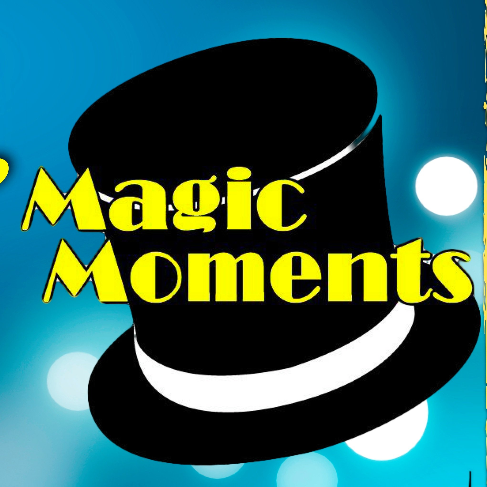
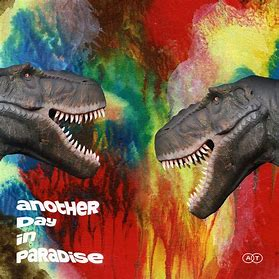

Streamradio
Le manager radio
Le "manager radio", c'est le serveur de diffusion de votre radio. Nous proposons 2 offres : le Manager "classique" et le Manager "Rocket"
Ecouter votre radio!Créez votre site webradio avec le CMS radio
Personnalisez les couleurs, les blocs, les modules, les textes ... Gérez vos émissions, les dédicaces, créez des actualités ou ajoutez des flux RSS illimités, créez des comptes pour votre équipe, créez des jeux/concours, top votes automatique, ajoutez autant de flux que vous le souhaitez, créez vos pages et blocs personnalisés en illimité... et bien plus encore !
Votre site de webradioVos émissions radio gratuites!
Téléchargez via notre Médiabox vos émissions chaque semaine ! Certaines émissions peuvent être proposées sous forme de packs personnalisés (bannières et jingles personnalisés en plus au nom de votre radio) * Toutes les émissions sont gratuites pour toutes les personnes ayant un Manager et/ou un CMS Radio chez Stream Radio (hors "Mix Paradise"). BIG MIX Toutes les semaines François Daurelle vous présente et vous mix toutes les nouveautés dance remix et mashup les plus joués et les plus dansés en boîte de nuit. Démo Animé par plusieurs DJ internationaux HOUSE CLUB SET Émission de 120 minutes en 8